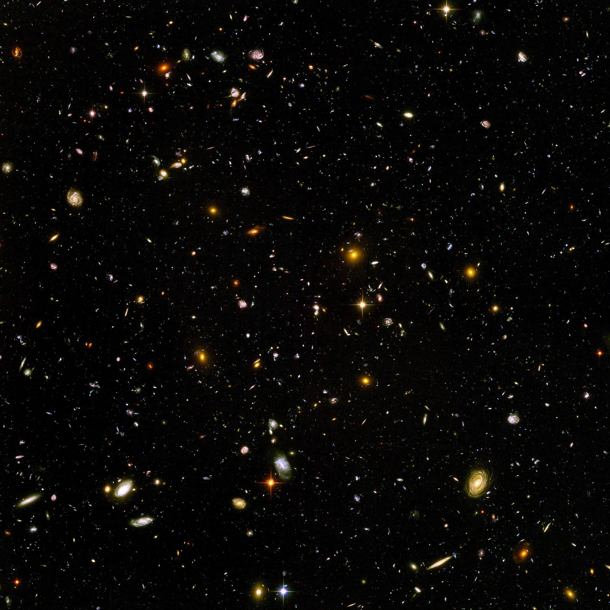

Merkurius
Planet terkecil dan terdekat dari Matahari. Permukaannya penuh kawah seperti Bulan dan hampir tanpa atmosfer.
4.879 km • 57,9 jt km dari Matahari

Tata surya kita punya delapan planet, dan tidak ada dua yang sama. Ada yang kecil dan berbatu seperti Merkurius, ada yang raksasa gas seperti Jupiter, sampai yang dingin dan jauh seperti Neptunus. Semuanya mengorbit satu bintang yang sama, Matahari.
Empat planet pertama berbatu dan padat, empat sisanya raksasa yang sebagian besar isinya gas dan es. Urutan ini bukan kebetulan: dekat Matahari terlalu panas untuk gas berkumpul, jadi planet dalam terbentuk dari batu dan logam.
Sejak 2006, Pluto tidak lagi dihitung sebagai planet, melainkan planet katai. Jadi jumlah planet resmi di tata surya kita adalah delapan, dan semuanya ada di halaman ini.
Planet
Jumlah planet resmi di tata surya, empat berbatu dan empat raksasa.
Tahun
Perkiraan usia tata surya, dihitung dari batuan tertua yang pernah ditemukan.
Bulan
Total bulan yang mengorbit delapan planet, paling banyak dimiliki Saturnus dengan 146 bulan.
Massa Matahari
Bagian massa seluruh tata surya yang ada di Matahari. Semua planet digabung hanya 0,14%.
Gunakan tombol filter untuk melihat planet berdasarkan jenisnya, lalu klik salah satu kartu untuk melihat detailnya.
Planet terkecil dan terdekat dari Matahari. Permukaannya penuh kawah seperti Bulan dan hampir tanpa atmosfer.
4.879 km • 57,9 jt km dari Matahari
Planet terpanas di tata surya, diselimuti awan tebal yang memerangkap panas. Berputar terbalik dari planet lainnya.
12.104 km • 108,2 jt km dari Matahari
Satu-satunya planet yang diketahui memiliki kehidupan, dengan air cair dan oksigen di atmosfernya.
12.742 km • 149,6 jt km dari Matahari
Planet merah dengan gunung tertinggi di tata surya, Olympus Mons, dan jejak air di masa lalunya.
6.779 km • 227,9 jt km dari Matahari
Planet terbesar, massanya lebih besar dari semua planet lain digabung. Badai Bintik Merah Besarnya sudah berumur ratusan tahun.
139.820 km • 778,5 jt km dari Matahari
Terkenal dengan cincinnya yang lebar dari es dan batu. Planet paling ringan, kurang padat dari air.
116.460 km • 1,43 miliar km dari Matahari
Berputar miring hampir 98 derajat, seperti menggelinding di orbitnya. Atmosfer metananya membuatnya biru kehijauan.
50.724 km • 2,87 miliar km dari Matahari
Planet terjauh, dengan angin tercepat di tata surya sampai 2.100 km per jam.
49.244 km • 4,50 miliar km dari Matahari
Belum ada planet pada kategori ini.
Klik salah satu kartu planet di atas untuk melihat diameter, jarak, lama satu tahun, dan jumlah bulannya.
Klik tombol di bawah untuk menampilkan fakta planet secara acak.